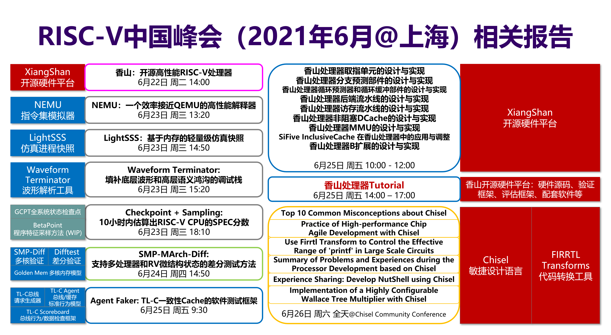

[Under Construction] XiangShan: An Open Source High Performance RISC-V Processor and Infrastructure for Architecture Research
|
|
|
简介香山是一款开源的高性能 RISC-V 处理器，基于 Chisel 硬件设计语言实现，支持 RV64GC 指令集。在香山处理器的开发过程中，团队使用了包括 Chisel、Verilator 等在内的大量开源工具，实现了差分验证、仿真快照、RISC-V 检查点等处理器开发的基础工具，建立起了一套包含设计、实现、验证等在内的基于开源工具的处理器前端敏捷开发流程。 在本次 Tutorial 中，开发团队将详细介绍香山处理器的基础开发流程，通过实际动手操作向观众展示处理器的敏捷开发流程及配套基础设施工具的使用方法。 香山开源网址： https://github.com/OpenXiangShan/XiangShan. Tutorial 报名网址： https://www.bagevent.com/event/7497950. 报名本次Tutorial需要同时报名RISC-V中国峰会。如您还未报名RISC-V中国峰会，请先报名RISC-V中国峰会（第三轮补充报名通道： https://www.bagevent.com/event/7522967）。因疫情防控需要，未通过RISC-V中国峰会报名的参会者很有可能无法进入校园。
示例视频
主题本次 Tutorial 将会包含以下主题： 基础部分
听众目标听众: 对处理器设计、敏捷开发和验证感兴趣的开发者, 对 RISC-V 指令集感兴趣的开发者等 预备知识: 体系结构基础知识, Linux 基础知识 注意：请观众带上可以联网并使用SSH客户端的设备，动手实践环节需要连接我们提供的服务器进行。为了应对新冠肺炎可能的各种突然疫情，我们已经提交了五级防疫预案，参会人数会根据疫情动态等级进行及时调整。请留意通知信息。
会议相关报告
致谢 & 招募感谢北京微核芯科技有限公司为香山处理器第一期提供产业经验、联合完成结构设计及物理设计 招募香山处理器二期联合开发合作伙伴，已加入企业： 欢迎更多伙伴加入！ 联系人：李迪 13811881360
活动合作方
|